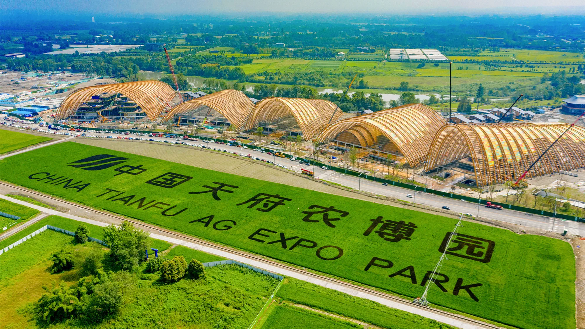

2021 - 2024 | 云南园林绿化股份有限公司 |成控部部长

标杆项目全周期管控： 独立统筹·国资委重点项目天府农博园园林绿化工程。全权负责总包成本控制及现场物料流转体系，通过建立动态成本模型，确保超大型项目成本的最优配置与风险规避。
商务谈判与风控： 主导核心分包单位的商务谈判与合同拟定。作为甲方(四川天府农博园投资有限公司)对接首要责任人，建立产值核算双重校验机制，显著提升款项报送准确率与回款效率。
团队领军与梯度建设： 统筹管理项目部专业造价团队，通过引入“产值挂钩式”考核指标，激发全员效能，使团队人均产值提升 20% 以上。
梯队孵化： 成功培养多名骨干成控成员，其中 1 名成员通过内部选拔晋升为项目成控主管，实现了人才梯队的良性流转。
知识资本化与标准化(SOP)： 构建半月度定期专业培训机制，将个人在总包项目中的实战经验沉淀为《成控标准作业手册》。通过标准化流程引导，将新员工融入周期缩短 30%，确保团队输出质量的高度一致性。
数字化运营优化： 自研并优化项目部数据管理体系，通过重构月/季报及产值请款流程，将繁杂的 Excel 数据转化为决策看板，实现项目整体流转效率质的飞跃。
数字化指标建模： 独立开发成控核心指标分析体系，涵盖“动态成本偏差率”、“材料周转利用率”及“分包利润贡献度”等多维模型。将碎片化数据整合为直观的分析看板，使原本复杂的成本研判时间大幅缩短，为项目决策提供精准的数字化支撑。